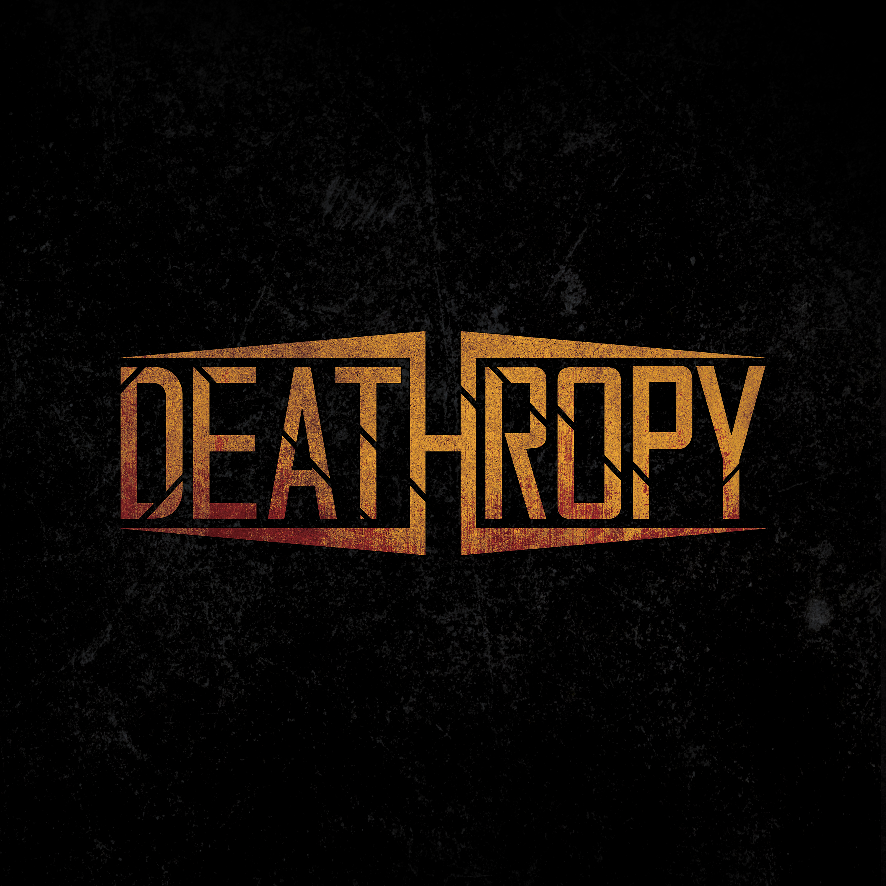

Presenting our latest single, Castle of Decay

Listen from your favorite streaming platforms
Sat 28.03.2026 HELSINKI, Korjaamo Supporting Bloodred Hourglass + Pridian
Tickets hereFri 18.04.2026 TURKU, Nirvana + Inborn Tendencies, Veil of Peril
Fri 24.04.2026 LAPPEENRANTA, Totem + Dyecrest
Fri 15.05.2026 OULU, Tukikohta Bloodstained Fest
Sat 04.07.2026 RISTIINA, Varkaantaipale + Dyecrest
Fri 21.08.2026 JOENSUU, Kerubi Unholy Summerfest
More dates to come, stay tuned!
17.01.2026 MIKKELI, Wilhelm w/ Decrowned
03.01.2026 LAHTI, Torvi w/ Kollectivist, Kaira
20.12.2025 TAMPERE, Varjobaari w/ Bloodstained Halo, Negaatio
06.12.2025 HELSINKI, Bar Base w/ Bloodblind, Dyecrest
22.11.2025 LAPPEENRANTA, Monari w/ Torchia, Admire The Grim
25.10.2025 KANGASNIEMI, Bar Tiger w/ Kollectivist
25.09.2025 JYVÄSKYLÄ, Rockneck w/ Dyecrest, Nitrik
06.09.2025 MIKKELI, Torin Kesäkauden Häätäjäiset 3 w/ Agarwaen, KITA
30.08.2025 NAKKILA, Tyyne-Rock w/ As I May, Takalaiton, Beyond The Hate etc.
18.01.2025 MIKKELI, Wilhelm
07.12.2024 LAPPEENRANTA, Nuijamies w/ Brymir, Dyecrest, etc.
25.10.2024 MIKKELI, Kulttuuritalo Tempo w/ Brymir, Mors Subita
07.09.2024 MIKKELI, Torin Kesäkauden Häätäjäiset 2 w/ Nitrik, Dyecrest
03.08.2024 OTAWALA FESTIVAL w/ Bloodred Hourglass, Dyecrest, Funeral Unit, Nitrik etc.
26.07.2024 SAIMAA SOUNDS GOES METAL w/ Stratovarius, Turmion Kätilöt, Finntroll
19.07.2024 KOTKA, Haukka Music Bar w/ Levian
18.05.2024 KANGASNIEMI, Bar Tiger w/ Heaven Gemini
11.05.2024 VANTAA, Skenesali w/ Dyecrest, Levian
19.04.2024 TAMPERE, Olympia w/ Bloodred Hourglass
29.03.2024 HELSINKI, Bar Base w/ Dyecrest
29.02.2024 HELSINKI, Bar Loose w/ Plastic Cobra, Levian
16.02.2024 JOENSUU, La Barre w/ Dyecrest
10.02.2024 RISTIINA, Sataman Valot w/ Dyecrest
03.02.2024 MIKKELI, Wilhelm
25.11.2023 MIKKELI, Kivijalka w/ Call From Abyss
14.10.2023 MIKKELI, Jälkipeli
29.09.2023 MIKKELI, Wilhelm w/ Lastout, Shereign, Awake Again
02.09.2023 MIKKELI, Torin Kesäkauden Häätäjäiset w/ Funeral Unit, Walaja